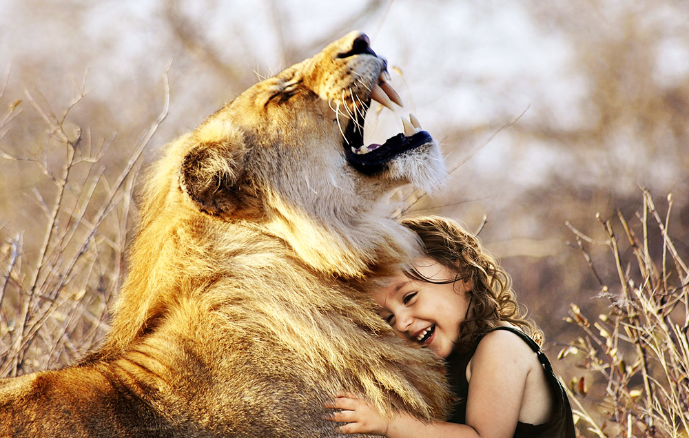
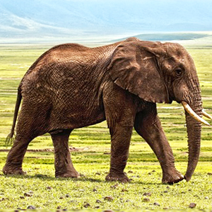
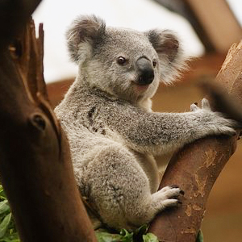
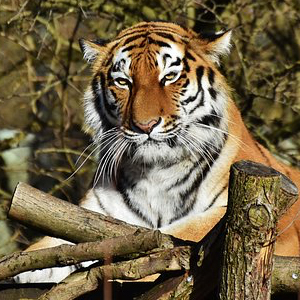

わくわく動物園へようこそ！

わくわく動物園の動物たち
たくさんの動物たちが、皆さまのお越しをお待ちしています。
動物たちの紹介
ぞう
コアラ
トラ



長い鼻、大きな耳が特徴です。 草・葉・果実・野菜などを食べます。
みんなの人気者。 草食性でユーカリやアカシアの葉や芽を食べます。
トラの食性は動物食で、 オレンジ色の体色に黒と白のしま模様が特徴的です。
お知らせ
キャンペーン中！ぞうさんのストラップを贈呈いたします。
今なら、ライオンと写真撮影ができます。
京都市動物園のWebサイトは、こちらです。